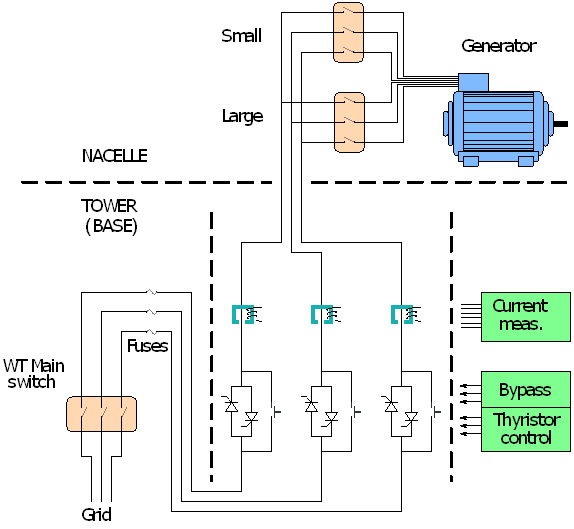

Next figure we present a simplified schematic of electric connection of the Wind Turbine to the Grid, corresponding this Simulator for "Dual Speed Active Stall Wind Turbine".

The Generator voltage is typically 690 V. The power cables from the Generator arrives to the Electrical Panel, where they, eventually, get connected to the Grid through contactors, fuses and busbars. There are Wind Farms in which the connection of each Wind Turbine to the Point of Common Connection (PCC) of the Wind Farm is done at this 690 V level (considered low voltage). In other cases (more common) this connection is done at Medium Voltage level (above 10 KV, typically 15 KV): in that case there is a step up transformer that can be located in several places: either at the Nacelle, near the Generator, or in the basement of the Tower (near the Electrical Panel) or housed outside, very near the Tower.
In the above schematic, notice that the Generator is connected to the downward cables through one of two contactors, labeled "Large" and "Small": that corresponds to two possible ways of connecting the stator winding, resulting in either a 4 magnetic poles (Large) or 6 magnetic poles (Small). Other models of similar Wind Turbines has two independent Generators instead.
These two connecting ways have their own electrical and mechanical characteristics: in the Large connection the Generator may produce the Nominal Power (1.300 KW in the simulated machine), while in the Small connection it can only delivers 250 KW. But the main reason for dual speed capability is better performance of the DriveTrain at wind speeds below Nominal Wind. With 4 poles the synchronous speed (assuming Grid at 50Hz) is 1500 rpms, while with 6 poles this speed is 1000 rpms. As the GearBox ratio is fixed (around 1:77) , when the Generator is connected with Large the Blades rpms are around 19.5 (= 1500/77) , while in the Small connected Blades turn at approx 13 (=1000/77). The aerodynamic performance of the Blades for low wind speeds is better with this lower value of rpms. So the main purpose of having these two ways of connection is to have a very reliable and high performant way of adapting the Wind Turbine to different wind speeds.
The figure above shows the components of the Grid connection: the Grid arrives to the generator through the "Main Switch" located in the Power Distribution Panel, situated at the bottom of the tower.
While in production, the switch labeled "Bypass" is closed, effectively bypassing the set of thyristors on each phase. The thyristors are used in the process of start production (cutin), using a process known as soft connection , and also used in other electrical installations in the industry.
This soft connection process solves the following problem: when the Controller decides to start the "cutin" process (start production), the DriveTrain rpms are 0, so the Generator rpms are also 0: logically the Generator stator is not connected to the Grid. The Controller first set the Blades pitch to an adequate value, so there is some mechanical torque forcing the DriveTrain, and eventually the brake is released, moment at which Generator rpms start growing. When these rpms approach the synchronous speed of the Generator to the Grid, arrives the time to try to connect the Generator stator to the Grid: but that should happen only when the rpms are at synchronous speed. In that situation we have a heavily inertial system (the DriveTrain) with an energy input (from the wind) controlled only through an slow mechanism (the Blades pitch), obviously very inadequate to fine tune the rpms of the Generator to its synchronous speed. Just a little before arriving to synchronous speed, the Controller uses the soft connection procedure to, first, motoring the DriveTrain from the Grid during a very short period (typically below 2 seconds) and also to magnetize the air gap of the Generator. This action has the effect of forcing the Generator rpms to move to its synchronous speed and to adapt immediately to production rpms, just a little above that speed.
The generator's rotor acceleration is really powered by the wind, so during the process of going to production (cutin), the Controller takes great care to control that acceleration, basically using the Blades pitch control, so that the generator's rotor speed arrives gently to the synchronous speed. While still below synchronous speed, the Controller drives the gates of the Thyristors to allow a progressive conduction through them, that is the generator is behaving as a motor, ie consuming power from the Grid. This operation takes the effect of forcing the generator's rotor to approach gently the frequency and phase of the Grid. When that is achieved the Bypass switches are closed.
The electrical circuit for the connection to the Grid is completed with current transformers for the three lines. The output of these transformers goes to the Controller, that use them to implement different policies and security issues.